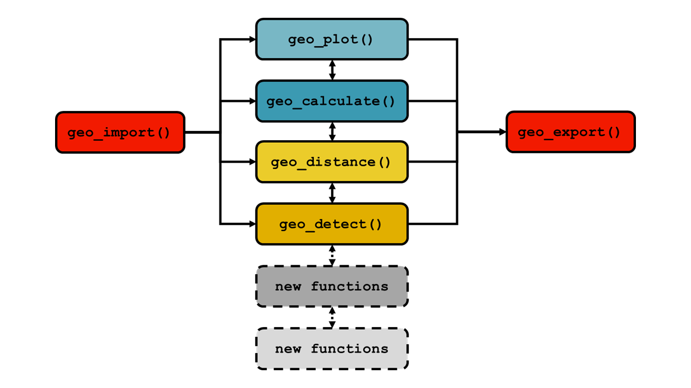
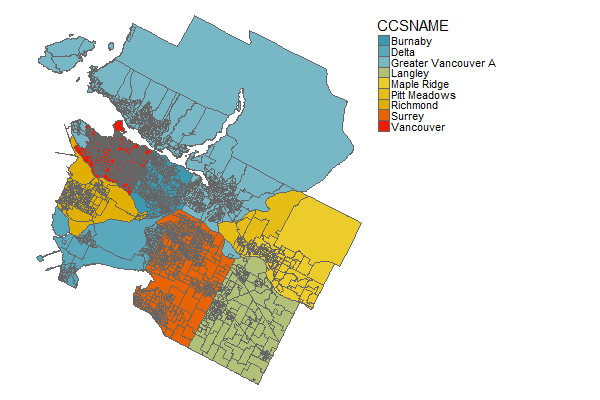
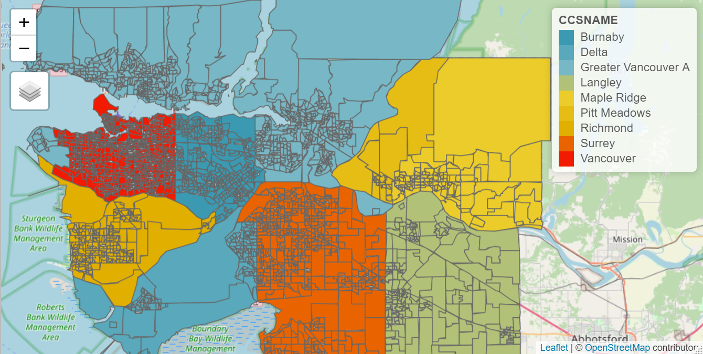
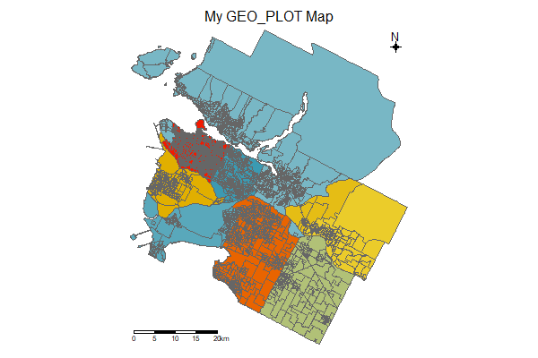
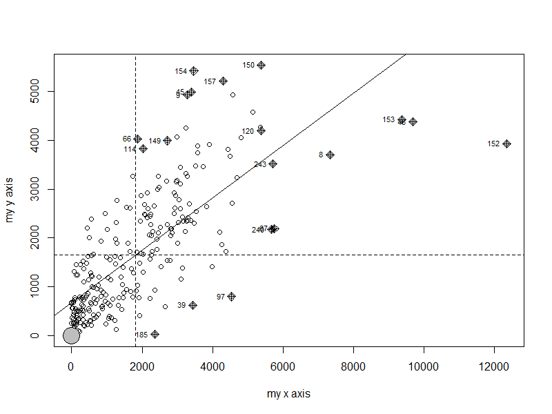
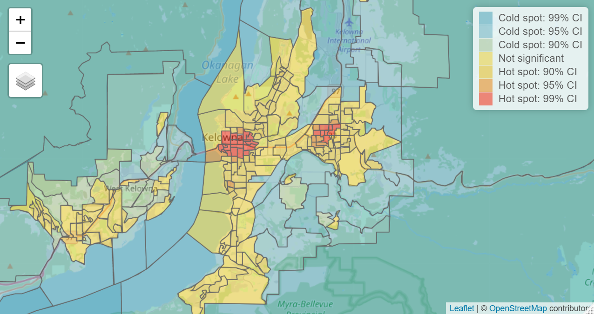
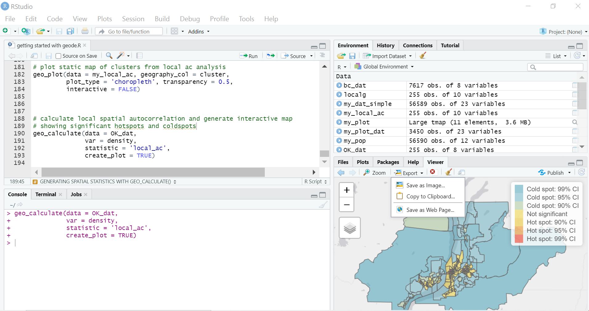

Chapter 2 Using geode
In this chapter, we briefly review the structure of the geode software tool and then work through an initial example to help new users get started.
2.1 Structure of the tool
The geode tool is designed as a set of compatible functions that can be used individually or together to map and analyze geospatial data.

In the current version the core functions are
geo_import() for importing geographic boundary data and attribute data
geo_plot() for plotting maps
geo_calculate() for calculating (and mapping) spatial statistics
geo_distance() for running distance-based proximity analysis
geo_detect() for detecting significant spatial clusters
geo_export() for exporting spatial and attribute data to other file formats.
The design of geode is flexible and allows the easy addition of new functions in subsequent versions of the tool.
Important details on each function can be found in Chapter 3, and in the associated help documentation in Chapter 5, and through the available help files in R. Users should review these details to ensure a full understanding of geode output.
2.2 Getting started
After installing the geode package, it is recommended that new users work through the following example in order to become acquainted with the basic usage of the geode tool. This example works through several functions quickly and is only meant to give users a general sense of how the tool works, before delving into the technical details of each function.
The example provides a brief introduction to three of the core functions: geo_import(), geo_plot() and geo_calculate().
Supporting information, such as details of the specific syntax for each function, is found in the help files as described below.
Note that in this example only the geode package is loaded by default. Hence, any functions that are used from other R packages are always called explicity using the syntax package_name::function_name. For example, the filter function from the tidyverse package dplyr is called in the script using dplyr::filter().
Users are free to load other packages to support additional data manipulation if desired.
2.2.1 Setup
First, begin by loading the geode package using the R function library().
library(geode)It is good practice to define any needed folder paths (e.g., input or output locations) or data files at the beginning of your script. Here, we define an input directory and the names of two data files. These files are provided with the geode package, but originate from freely available Statistic Canada datafiles.
Note that in R, all file and folder paths must be specified using forward slashes ‘/.’
# location of input data (modify as needed for your computer)
indir <- "C:/Users/Michael/Documents/R/working dir/geode_prototype/data"
# names of data files to be imported
shape_file_da <- "geode_data_spatial_da.shp"
source_file_pop <- "geode_data_pop_da.csv"2.2.2 Importing data with geo_import()
To begin, see the help file for geo_import(), which describes it’s usage, arguments and further details. Whenever you have questions about the use of this function, call the help file.
?geo_importTry importing the spatial data file we defined above (‘shape_file_da’) using the following code. Shapefiles can be optionally simplified during import, which creates a smaller, more efficient, working file (but note that simplified files are usually only appropriate for experimental use).
# shapefile not simplified on import
my_dat <- geo_import(path = paste(indir, shape_file_da, sep = "/"),
filetype = 'spatial',
simplify = FALSE)
# shapefile simplified on import
my_dat_simple <- geo_import(path = paste(indir, shape_file_da, sep = "/"),
filetype = 'spatial',
simplify = TRUE)After importing, inspect the variables present in the data. Geographic boundary data should always contain a ‘geometry’ column.
dplyr::glimpse(my_dat)How big are the imported shapefiles? This is important to know, as all imported files are brought into memory and may affect the performance of your computer if RAM is limited. Check using the R function object.size().
object.size(my_dat) # original DA file ~ 250MB
object.size(my_dat_simple) # simplified DA file ~ 75MBNow, import the attribute datafile we defined above (‘source_file_pop’). Attribute data contains characteristics of the spatial units, such as population size.
my_pop <- geo_import(path = paste(indir, source_file_pop, sep = "/"),
filetype = 'attribute')Inspect variables in attribute data.
dplyr::glimpse(my_pop)2.2.3 Creating maps with geo_plot()
To begin, see the help file for geo_plot(), which covers it’s usage, arguments and further details. Whenever you have questions about the use of this function, call the help file.
?geo_plotSubset the data for plotting. Here we filter to include only the Census Division (variable CDNAME) of Greater Vancouver.
my_plot_dat <- my_dat %>%
dplyr::filter(CDNAME == 'Greater Vancouver')Generate a static map using the default settings (i.e., specify only required arguments)
geo_plot(data = my_plot_dat,
geography_col = CCSNAME,
plot_type = 'choropleth')
Generate an interactive map using the default settings (i.e., specify only required arguments). With interactive maps, users can turn background layers on/off, scroll in any direction, zoom in/out, and hover over areas to obtain further information. (Note that these background layers are loaded from an online repository, hence users must have an active internet connection).
geo_plot(data = my_plot_dat,
geography_col = CCSNAME,
plot_type = 'choropleth',
interactive = TRUE)
Also note that the information displayed when hovering over a region in an interactive map can be specified using the hover_id argument. By default, geode displays the name/value contained in the column specified by the geography_col argument. However, any column in the input dataset can be specified by hover_id, giving users the option to display, for example, the regional population size or event rate of interest.
If more visibility of the underlying reference layer is desired, the shading of the choropleth map can be adjusted using the transparency = argument, with values between 0 (transparent) and 1 (opaque).
Next, generate a static map including optional settings (e.g., include plot title, scale and compass, but drop legend).
geo_plot(data = my_plot_dat,
geography_col = CCSNAME,
plot_type = 'choropleth',
plot_title = 'My GEO_PLOT Map',
legend_title = 'none' ,
scale_bar = TRUE,
compass = TRUE,
interactive = FALSE)
Finally, export the plot for later use. First create the plot as an R object ‘my_plot.’
my_plot <- geo_plot(data = my_plot_dat,
geography_col = CCSNAME,
plot_type = 'choropleth',
plot_title = 'My GEO_PLOT Map',
legend_title = 'none' ,
scale_bar = TRUE,
compass = TRUE,
interactive = FALSE)Then, export as an image file:
# specify output location and file name for plot
outdir <- "C:/Users/Michael/Documents/R/working dir/output"
outfile <- "my_plot.png" # note file extension .png
# exporting as an image using png() function
png(filename = paste(outdir, outfile, sep = "/"),
height = 4, width = 6, units = "in", res = 300) # 4" x 6" image, resolution 300 dpi
print(my_plot)
dev.off()Here we used the png() function to export a .png file. Other available functions, with similar syntax, can be used to export images: bmp(), jpeg() and tiff().
Or, export as a pdf:
# specify output location and file name for plot
outdir <- "C:/Users/Michael/Documents/R/working dir/output"
outfile <- "my_plot.pdf" # note file extention .pdf
pdf(file = paste(outdir, outfile, sep = "/"),
width = 8.5, height = 11) # 8.5" x 11" output size
print(my_plot)
dev.off()For additional information and options available when exporting plots as images or pdf, see the corresponding help files ?png or ?pdf.
A note about map colour styles: When generating maps, users can select from a range of predefined colour palettes or define their own (see style argument under ?geo_plot). The above examples were generated using the built-in ‘zissou’ style, but users are encouraged to examine other colour schemes or to create their own.
2.2.4 Generating spatial statistics with geo_calculate()
To begin, see the help file for geo_calculate(), which covers it’s usage, arguments and further details. Whenever you have questions about the use of this function, call the help file.
?geo_calculateImport the provided BC data with Dissemination Areas (DAs) and population sizes:
bc_dat <- geo_import(path = paste(indir, 'geode_data_bc_da_pop.shp', sep = "/"),
filetype = 'spatial')Subset data to only DAs in Census Division (variable CDNAME) of Central Okanagan:
OK_dat <- bc_dat %>%
dplyr::filter(CDNAME == 'Central Okanagan')First, we test for global spatial autocorrelation and generate a standard statistical plot (Moran’s I scatterplot). As an illustration, we run our analysis on population density (variable ‘density’):
geo_calculate(data = OK_dat,
var = density,
statistic = 'global_ac',
create_plot = TRUE)Here, geo_calculate() ouputs the test statistic and p-value associated with the test for global spatial autocorrelation:
statistic simulations test_statistic p_value
<chr> <int> <dbl> <dbl>
1 Monte-Carlo simulation of Moran I 10000 0.537 0.0001
Next, we calculate local spatial autocorrelation and generate an output dataset. Again, we use the population density variable for this analysis, as an illustrative example.
localg <- geo_calculate(data = OK_dat,
var = density,
statistic = 'local_ac',
create_plot = FALSE)
# see output file
localgSimple feature collection with 255 features and 9 fields
geometry type: MULTIPOLYGON
dimension: XY
bbox: xmin: 4245014 ymin: 1925870 xmax: 4333571 ymax: 1993292
projected CRS: PCS_Lambert_Conformal_Conic
First 10 features:
DAUID PRNAME CDNAME CSDNAME pop dwellings density
1 59350077 British Columbia / Colombie-Britannique Central Okanagan Kelowna 2693 1531 140.4
2 59350078 British Columbia / Colombie-Britannique Central Okanagan Kelowna 517 251 414.0
3 59350079 British Columbia / Colombie-Britannique Central Okanagan Kelowna 736 317 2251.5
4 59350080 British Columbia / Colombie-Britannique Central Okanagan Kelowna 971 380 3383.3
5 59350081 British Columbia / Colombie-Britannique Central Okanagan Kelowna 623 225 3014.0
6 59350082 British Columbia / Colombie-Britannique Central Okanagan Kelowna 479 180 2453.9
7 59350083 British Columbia / Colombie-Britannique Central Okanagan Kelowna 363 165 3579.9
8 59350086 British Columbia / Colombie-Britannique Central Okanagan Kelowna 662 398 7339.2
9 59350087 British Columbia / Colombie-Britannique Central Okanagan Kelowna 363 215 3276.2
10 59350088 British Columbia / Colombie-Britannique Central Okanagan Kelowna 866 315 4686.1
geometry localg cluster
1 MULTIPOLYGON (((4293883 195... -2.6903611 Cold spot: 99% CI
2 MULTIPOLYGON (((4290959 194... -0.7791236 Not significant
3 MULTIPOLYGON (((4290580 194... 0.5233985 Not significant
4 MULTIPOLYGON (((4290653 194... 1.1537163 Not significant
5 MULTIPOLYGON (((4290245 194... 0.3777174 Not significant
6 MULTIPOLYGON (((4289926 194... 2.0569677 Hot spot: 95% CI
7 MULTIPOLYGON (((4289680 194... 2.8679259 Hot spot: 99% CI
8 MULTIPOLYGON (((4289142 194... 3.5445971 Hot spot: 99% CI
9 MULTIPOLYGON (((4289005 194... 4.0291994 Hot spot: 99% CI
10 MULTIPOLYGON (((4288792 194... 2.4985473 Hot spot: 95% CIWe see that the output includes each of the regions present in our analysis dataset, but now the test statistic (‘localg’) and significance category (‘cluster’) have been added.
We can export this output data for later use, using the geo_export() function:
# output path and filename
outfile <- "C:/Users/Michael/Documents/R/working dir/output/my_local_ac"
# export as shapefile (because output still contains geometry data)
geo_export(x = localg,
path = outfile,
filetype = "shp")Finally, we calculate local spatial autocorrelation but now also generate an interactive map showing the significant hotspots and coldspots
geo_calculate(data = OK_dat,
var = density,
statistic = 'local_ac',
create_plot = TRUE)
As with geo_plot() the transparency of the choropleth map can be adjusted to reveal more or less of the background reference layer (using the transparency = argument), and the information shown when hovering over a region can be modified (any column in the input dataset can be specified with the hover_id = argument).
2.2.5 Additional information on exporting output
The geode package contains a specific function, geo_export(), for saving spatial and attribute data to a file. More information on this function can be found in chapters 3 and 5 and examples can be found in chapter 4. Note that this function is only for exporting data, not plots.
Above, we provided an example of how plots and maps generated in geode can be exported as images using the png() function, or as pdfs using the pdf() function.
Additionally, it is worth noting that plots and maps can be exported manually using the RStudio interface. The lower right window of RStudio has a ‘Plots’ tab (for static maps) and ‘Viewer’ tab (for interactive maps), under which is an ‘Export’ option with drop-down menu:

Once a map has been generated in the ‘Plots’ window (or the Viewer window, if the map is interactive), users can choose from this menu to export the map as an image, copy it to the clipboard (and then paste into another program), or even save it as a webpage (if it is an interactive map). All of these options open a preview screen that allows you to manually adjust the image size, choose the output format and specify the output location.

Although this approach requires several manual steps and is therefore not easily reproducible, it can be useful for generating experimental figures quickly.